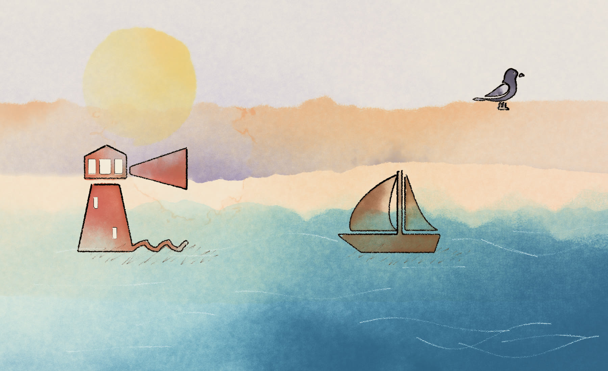

BreezeMatic → turn a topic into a finished vertical video: written, voiced, timed to the word, painted or typeset, and mixed.
A forty-second short is about a hundred and twenty words. Writing them is the quick part. What takes the afternoon is everything after: recording a read, pinning every word to a frame, cutting to the beat, setting type that never clips, ducking the music under the voice and mastering it to a number.
BreezeMatic does that work and shows its working. Every video is one beat sheet — every cut, every emphasis, every timing — that you can read and edit before a frame is rendered. The same seed gives you the same film, twice.
It is a local app and a command line. Nothing you make is uploaded unless you publish it, and there is no account to make.
“How honeybees make honey” — the watercolour look.
| Paintedwatercolour | Every beat painted live while it is read: skies wash in, the subject is inked, the shadow hatched, the words handwritten underneath. | free |
| Explainermotion graphics | Real pictures with camera moves; counters, charts, timelines and maps on the beats that carry a fact; captions word by word. | free or paid |
| Kinetic type | Big animated type over a photograph or a clip, cut to the beat. | free or paid |
| Cinematic edit | Snap zooms, hard recuts, slow motion on the line that matters, and a film grade. | free |
| Stick figure | A figure with a face acts out every beat in a drawn world, with weather, props and other people. | free |
| Whiteboard | Handwriting and drawings appear under the pen at the pace of the voice. | free or paid |
| Storybook | A drawn panel per beat with the same character throughout. | paid |
Script
From a topic, or your own words shaped into beats — not rewritten.
Voice
A local voice for free, or Gemini, ElevenLabs or your own cloned voice.
Timing
whisper.cpp pins every word to the millisecond it is said.
Plan
Cuts, emphasis and layout written into one beat sheet you can edit.
Pictures
Openly licensed photos and clips, generated stills, or painted scenes.
Render
Remotion draws every frame at 1080×1920, 30 fps.
Mix
Music ducked under the voice, sound on every cut, mastered to −14 LUFS.
Publish
Optional: straight to YouTube or a Facebook Page, with a drafted description.
# get it
git clone https://github.com/thebreezyanupam/breezematic-oss.git
cd breezematic-oss
pnpm install
# check what this machine has
pnpm cli doctor
# open the app at http://localhost:4747/app
pnpm cli appThen open Settings → Keys. Every key is optional and links to where you get it; Gemini, Pexels, Freesound and Cloudflare all have free tiers.
The machine should do the labour. The idea is the only part worth an afternoon.